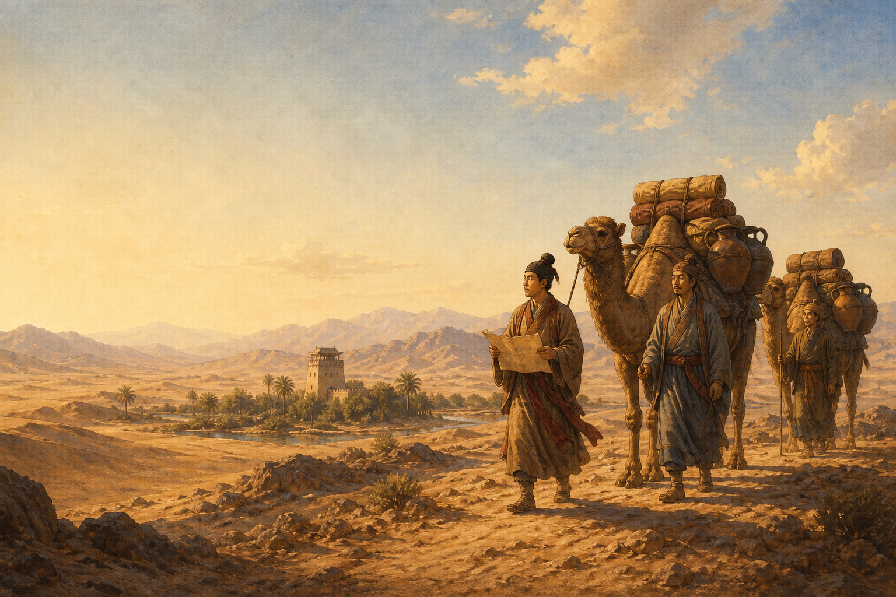
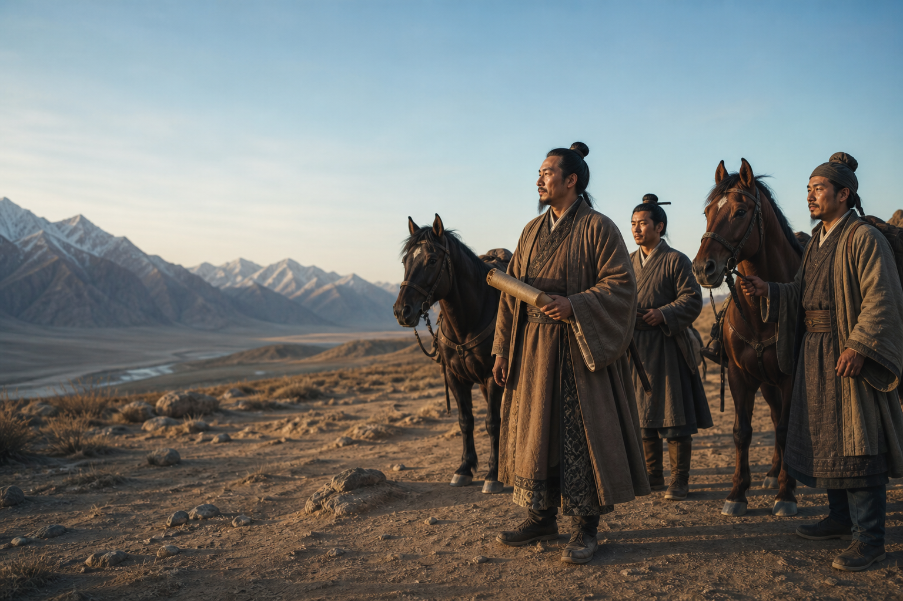
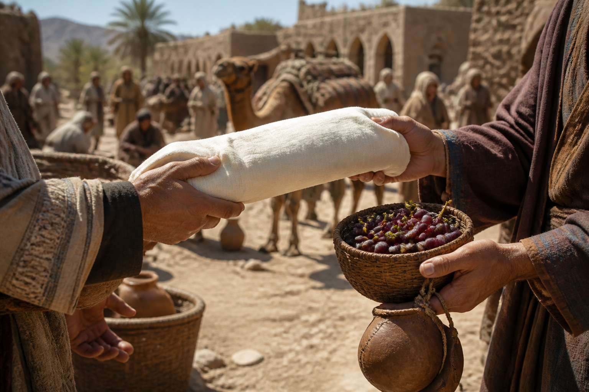

必记：长安 → 河西走廊 → 西域 → 更远地区。
常见问法：丝绸之路的起点、重要通道与方向。HISTORY LAB
初中历史 · 七年级 · 汉代丝绸之路
0 / 4 已解锁
UNIT 04 · TRADE & CONNECTION
行走的
丝路
一条路，为什么能把远方的人和物连接起来？不是背路线，而是像商旅一样读懂选择、风险与交流。

COURSE OVERVIEW · 课程总览
这一课，究竟讲什么？
本课对应秦汉时期的对外交流专题，常见课名为“汉通西域和丝绸之路”或“沟通中外文明的丝绸之路”。不同教材版本课名略有不同，但核心内容一致。
01张骞通西域为什么汉朝开始更了解西域？
02西域都护公元前 60 年设置，西域正式归属中央政权
03丝绸之路从长安经河西走廊，沟通欧亚
04文明交流物品、技术、艺术与思想的长期流动
KNOWLEDGE & EXAM FOCUS · 知识点与考点
把“背过”变成“会答”
必记：张骞出使促进汉朝与西域的沟通，不等于一人开出固定道路。
抓“出使、沟通、了解西域”这组关键词。必记：公元前 60 年设置西域都护。
意义：西域开始正式归属中央政权管辖。必记：丝路促进了中外经济、文化交流。
答题要写“物品＋技术/文化”，避免只答丝绸。01 · LOOK AT THE ROUTE
从哪里出发？
历史眼光
先看“在哪里”，再问“为什么”。路线背后常常藏着地形、水源与人的选择。
把地图当成一个需要解释的问题，而不只是需要记忆的答案。SIMPLIFIED ROUTE MAP · 简化示意图
点击三个路标，拼出一段路
地图不按比例绘制。请按从东到西的顺序点亮路标。
东 → 西
先从“长安”开始。
汉武帝时期，张骞两次出使西域，为汉朝了解和沟通西域创造了条件。
易错点：张骞不是“一个人开出一条固定道路”；交流网络由许多人长期连接而成。HISTORY IN CONTEXT · 历史背景
把“丝路”放回汉代
汉代中原人把玉门关、阳关以西的广大地区称为“西域”。通往西域的道路并非只有一条，商旅会依地形、绿洲、政治环境和季节调整行程。
- 约公元前 138 年张骞奉命出使西域，途中经历艰难，带回对西域的见闻。
- 张骞归来后汉朝对西域的认识增加，也推动了更多交往。
- 长期发展商人、使者、僧侣与工匠不断往来，逐渐形成跨地区的交流网络。

THE PROBLEM · 问题
商旅不喜欢绕路，为什么还要走“走廊”？
北：高山河西走廊南：荒漠与高原
面对高山、荒漠和长距离行程，商旅需要更稳定的通道、水源和停留点。
MAKE A CLAIM · 做判断
哪个解释最合理？
河西走廊是相对狭长的地带，北有山地，南有祁连山等地貌；它能够把中原与西域方向连接起来。路线会有分支，不能把历史上的丝路想成一条永远不变的直线。
EVIDENCE CARDS · 证据卡
翻开卡片，找出“交流”
点击一张卡：它从哪里来？又改变了什么？
从东向西丝绸、铁器等商品与工艺
从西向东葡萄、石榴、苜蓿等作物，以及良马等资源
长期交流人员往来促进技术、艺术与思想的传播和融合

CHECK · L2
哪一句最准确？
ROLE PLAY · 角色任务
你是从长安出发的商旅
队伍带着丝绸和铁器，准备向西行。你必须考虑：货物、道路和补给。
货物：轻而珍贵困难：荒漠与远路目标：安全抵达绿洲
为了提高到达的可能性，你会？
EXIT TICKET · 离场任务
完成一句历史解释
“丝绸之路能延伸，是因为人们会根据 ______ 选择道路，并在途中进行 ______。”
0 / 100